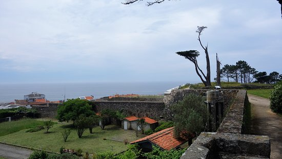
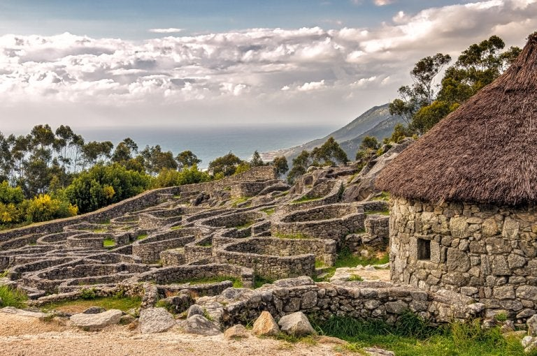
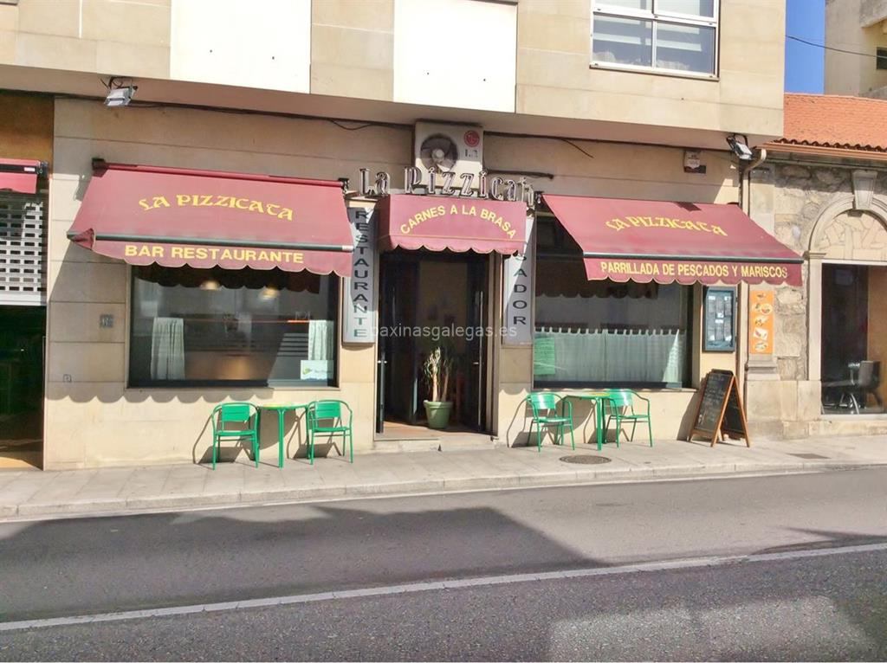
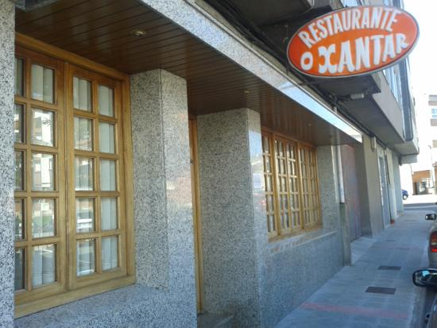

MASAT. Ten unha sala de exposición, duns 120 m2 ofrece unha visión dos sucesivos períodos do castro e os traballos arqueolóxicos de investigación realizados ata agora. Os contidos expostos son da Prehistoria, Idade de bronce, Época castrexa, da influencia dos romanos e das principais campañas de excavación arqueolóxicas pola sociedade Prol-Monte.
Castelo de Santa Cruz. Formou parte das fortalezas e sistemas defensivos que se construíron no tramo final do río Miño durante a Guerra de Independencia no s. XVII entre España e Portugal. A fortaleza, coñecida popularmente como Castelo, construíuse ao redor de 1664 e para acelerar a construción utilizouse pedra da muralla medieval que rodeaba a vila. A planta é de polígono irregular, con catro baluartes que sobresaen da muralla. Nos baluartes localízanse as garitas ben labradas en pedra. O acceso realízase a través da Porta da Vila, que sobe perpendicular á rúa Porto Rico e da Porta de Socorro que se accede por un paseo desde a rúa Santo Domingo de Guzmán.
Castro de Santa Trega. O gran xacemento arqueolóxico que ocupa unhas 20 has de superficie, das cales tan só unha pequena parte está escavada, ten as súas orixes documentadas no s. IV a. C. alcanzando o seu maior grao de desenvolvemento no cambio de era. Na península do Trega desenvólvese unha verdadeira cidade, de entre 3000 e 5000 habitantes na que conflúen as culturas mediterráneas e atlánticas.
Tapería Enxebre. Local rústico con decoración típica mariñeira. Súa especialidade: lamprea á bordalesa. Gran variedad de tapas de comida tradicional galega nun ambiente familiar e cercano.
La Pizzicata. Súa especialidade son as pizzas e pastas artesanais. Realizanse comidas por encargo e para levar, aceptan reservas no local. Dispon de conexión wifi e admiten pago con tarxeta.
Restaurante Xantar. Ofrecen pescados e mariscos, ternera galega e buey, tamén teñen postres caseros e vinos. Ten menú do día de luns a venres e menú do peregrino todos os días presentando a acreditación. Dispon de conexión wifi e terraza exterior